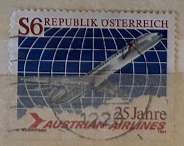
| SOURCE | TITLE| IMAGE MATCH | click to source page |
| eBay | Austria 1983, Austrian Airlines 25 years VF MNH, Mi 1734 | eBay | 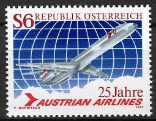 |
| eBay | Austria AA83 MNH 1983 Blocks set 4v Austrian Airlines 25 years | eBay | 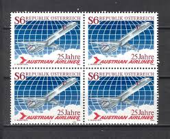 |
| Todocolección | austria 1999 ivert 2130 *** etnología y folclor - Buy Antique stamps of Austria on todocoleccion | 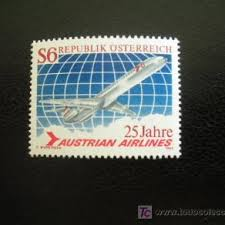 |
| Osta | Austria " LENNUK " 1983 (180239922) - Osta.ee | 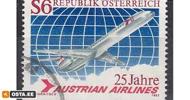 |
| sberatelstvi.cz | Aukce pohlednic a známek - Rakousko+ - Známky čisté | 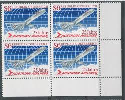 |
| Ay.by | Почтовые марки, продать, купить почтовые марки в Минске - Аукционы Беларуси - Ay.by. Страница 10239 | 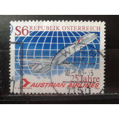 |
| Todocolección | austria 1954 instituciones de salud pública, yv - Compra venta en todocoleccion | 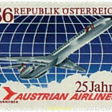 |
| eBay | Österreichische Briefmarken (1980-1989) als Einzelmarke online kaufen | eBay | 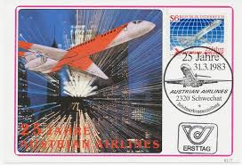 |
| eBay | Austria 1973 DOUGLAS DC-9 JET, FIRST INTL. AIRMAIL, VIENNA-KIEV SC 941 MNH | eBay | 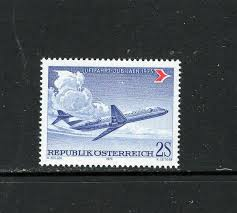 |
| eBay | FCV0075 Flight Card, AUA, Austria, 25 Anniv. of Wien – Amsterdam Air Service | eBay | 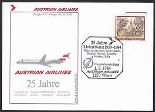 |
| Alamy | AUSTRIA - CIRCA 1973: a stamp printed in Austria shows Douglas DC-9, First International Airmail Service, Vienna to Kiev, 55th Anniversary, circa 1973 Stock Photo - Alamy | 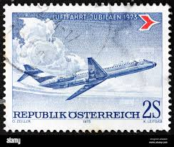 |
| TPO & Seapost Society | TPO & Seapost Society - TPOs of Austria | 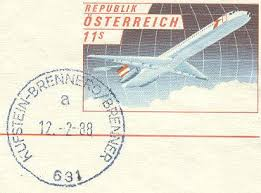 |
| Todocolección | austria. año 1954.pintor moritz von schwind. - Buy Antique stamps of Austria on todocoleccion | 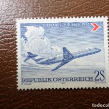 |
| eBay | AOP) First Flight covers with pictorial Aircraft meter marks (5) | eBay | 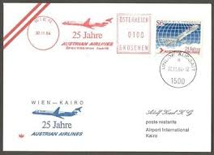 |
| eBay | FIRST FLIGHT AUSTRIAN AIRLINES ZURICH GRAZ (V3741) | eBay | 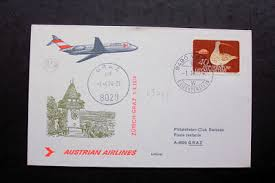 |
| BidCurios | Austrian Airlines First Flight Cover 1974 - BidCurios | 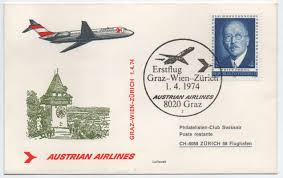 |
| Todocolección | austria. 1563 tm austrian airline. avion. 1983 - Buy Antique stamps of Austria on todocoleccion | 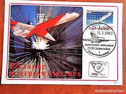 |
| Todocolección | austria. 1563 tm austrian airline. avion. 1983 - Acheter Timbres anciens d'Autriche sur todocoleccion | 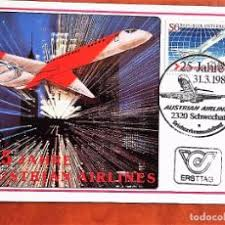 |
| Shutterstock | 10+ Thousand Jet Stamp Royalty-Free Images, Stock Photos & Pictures | Shutterstock | 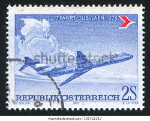 |
| Austria Netto Kataloge | ANK - ME 3 - AUA 7 series | 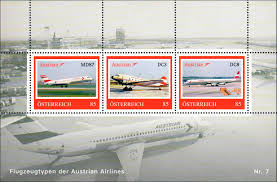 |
| eBay UK | AUSTRIA 2008 50th ANNIV AUSTRIAN AIRLINES MINT STAMP | eBay UK | 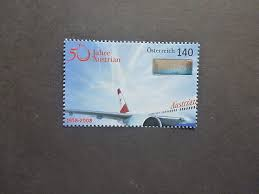 |
| VarageSale | Lorain, OH Buy and Sell New & Used Stuff | VarageSale | 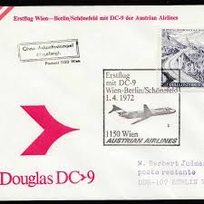 |
| Austria Netto Kataloge | ANK - ME 3 - AUA 6 series | 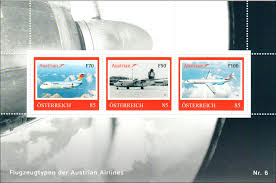 |
| eBay | FIRST FLIGHT AUA ZURICH GRAZ (V1322) | eBay | 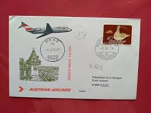 |
| Find Your Stamps Value | Value of universal postal union 1874-1974 stamps | 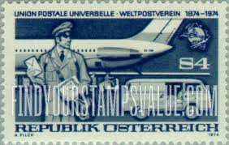 |
| eBay | Paris Wien Frankfurt 1963 AUA Austrian Airlines Airline Caravelle First Flight C | eBay | 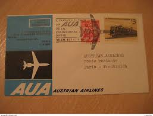 |
| BidCurios | Manila Size – Page 2122 – BidCurios | 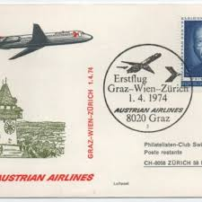 |
| eBay | FIRST FLIGHT AUA WIEN BEOGRAD (V3060) | eBay | 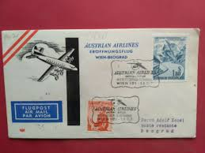 |
| Dorotheum | Sammlung Österr. 1960/2006 die EURO - NEUHEITEN(FRANKATURWARE) mit Kleinbögen, - Stamps and postcards 2025/06/30 - Realized price: EUR 150 - Dorotheum | 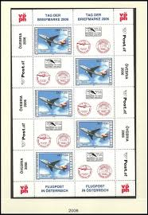 |
| Amazon.de | Prophila Collection Austria 2718 (complete edition) Mint NH 2008 Austrian Airlines (stamps for collectors) Airplanes/Balloons/Zeppelins/Aviation: Amazon.de: Toys | 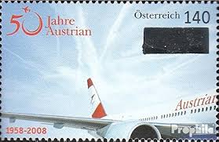 |
| eBay | FIRST FLIGHT AUSTRIAN AIRLINES WIEN TO DUSSELDORF 1961 | eBay | 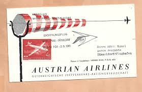 |
| eBay UK | Aviation Austrian Stamps for sale | eBay UK | 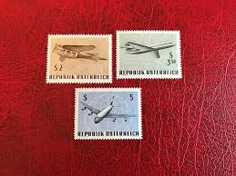 |
| eBay | Austria 1968 - 50 Years Of Airmail - Vienna - F66625 | eBay | 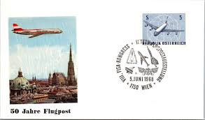 |
| eBay | D17424 Vienna -Zurich 1978 Austrian Airlines Airmail Cover Austria | eBay | 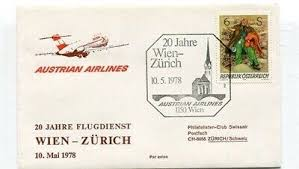 |
| Todocolección | austria yvert num. 1886 usado - Buy Antique stamps of Austria on todocoleccion | 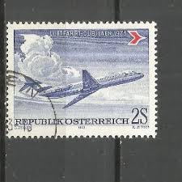 |
| Io Collezionista | 2008 - AUSTRIA - AUSTRIAN AIRLINES - NUOVO- LOTTO/33417 | FRANCOBOLLI | 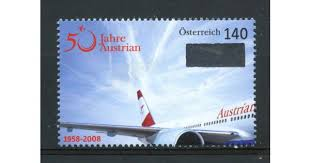 |
| eBay | 1951-1960 Year of Issue Austrian Stamps for sale | eBay | 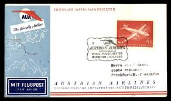 |
| eBay | McDonnell Douglas DC-9-30 Airliner Aircraft Stamp (2003 Centennial of Flight) | eBay | 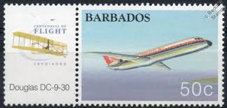 |
| Dreamstime.com | TURKEY - CIRCA 1967: a Stamp Printed in Turkey from the `Aircraft` Issue Shows a Douglas DC-9-30 Airliner, Circa 1967. Editorial Stock Image - Image of mail, plane: 198133154 | 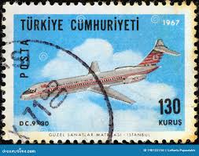 |
| TGW.cz | 1979) MiNo. 328 - 331 ** - UN New York - postage stamps | 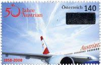 |
| eBay | FIRST FLIGHT AUSTRIAN AIRLINES ROMA WIEN (V3880) | eBay | 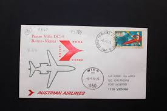 |
| eBay | 6. Austria 1968 Airplanes - International Airmail Exhibition (IFA) Vienna 1968 | eBay | 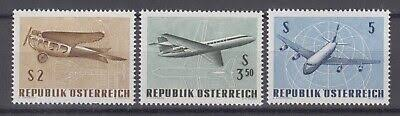 |
| philcosa | SAA 1 Date: 3 9 73 Price R500 First scheduled non-stop flight LONDON- JOHANNESBURG Back stamped Jan Smuts Airport 4 IX 73 Size: | 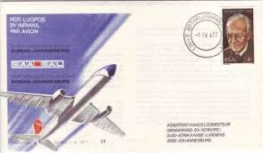 |
| eBay | Bucharest Budapest Wien 1965 Aua Austrian Airlines Airline Caravelle First Fligh | eBay | 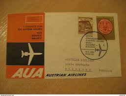 |
| eBay | FIRST FLIGHT SWISSAIR ZURICH HAMBURG (V3254) | eBay | 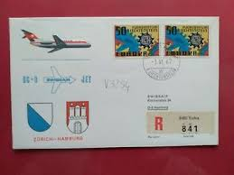 |
| eBay | FIRST FLIGHT SWISSAIR ZURICH BUKAREST (V1893) | eBay | 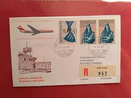 |
| The Airchive | US Airways DC-9 Safety Card 1987 - The Airchive 2.0 | 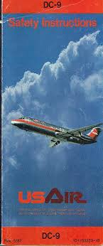 |
| eBay | FIRST FLIGHT SWISSAIR LEIPZIG ZURICH (V113) | eBay | 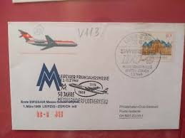 |
| eBay | FIRST FLIGHT AUA WIEN MILANO (F120861) | eBay | 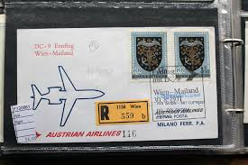 |
| eBay | DDR MNH ** Block 59 SC B191 Aerosozphilex | eBay | |
| eBay | FIRST FLIGHT AUA WIEN PARIS (V3079) | eBay | |
| eBay | Österreich MiNr. 1413 Viererblock postfrisch** (GB 1808) | eBay | |
| eBay | FIRST FLIGHT SWISSAIR WIEN BASEL (V2009) | eBay | |
| eBay | DDR East Germany 1980 ** Bl.59 Luftpost Airmail Fair | Flugzeug Aeroplane | eBay | |
| eBay | Aviation Air Mail Austrian Stamps for sale | eBay | |
| Dreamstime.com | Airplanes on postage stamp editorial photo. Image of retro - 147863671 | |
| eBay | Future Mail Transportation 1989 World Stamp Exposition FDC 11-27-89 Block of 4 | eBay | |
| eBay | FIRST FLIGHT AUA WIEN PARIS (V3106) | eBay | |
| eBay | GERMANY DDR 1980 Minisheet - Aviation - The 25th Anniv. of Interflug Airlines | eBay | |
| eBay | Österreich Michelnummer 2159 postfrisch (europa:8483) | eBay |